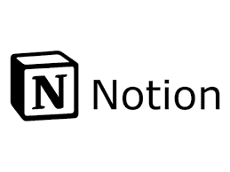

Portfolio
Stage première année

L’Université de Lille est une université française, créée en 1559. Elle a subi une fusion des 3 universités de Lille en 2018. Lors de mon stage, j’ai été intégré au CRPM Service Audiovisuel de l’Université de Lille basé à Villeneuve-d’Ascq.
Projet Stage première année
Mise en contexte
J'ai dû créer un site web qui fonctionner comme une grande bibliothèque d'images dont l'objectif était de stocker toutes les images de l'université (les images de tous les graphistes) afin de mettre en évidence celles qui nous intéressaient grâce a un moteur de recherche.
Organisation du projet
Le projet n'était pas parfaitement défini. On savait où on devait aller, mais pas forcément comment. Donc, j'avais beaucoup de réunions, et on avançait semaine par semaine selon les idées de chacun.
Détail du projet

J’ai commencé par me renseigner sur les métadonnées contenues dans les images, comment je pouvais les récupérer et en ajouter.

J’ai ensuite commencé à regrouper les images de l’université et essayer de les afficher sur une page web (pas de base de données mais création d’une arborescence de dossiers)

Exemple d'arborescence

J’ai ensuite créé une simulation de l’arborescence de mes fichiers sur mon moteur de recherche pour créer des filtres (catégories) selon les projets et les différentes catégories disponible.

J’ai ensuite codé le moteur de recherche (il regarde si au moins un mot de la recherche se situe soit dans le nom de l’image, soit dans une zone précise des métadonnées de l'image, et il fait attention au filtre sélectionné).


J’ai ensuite effectué le même principe avec les polices de caractères (chaque projet a une liste de polices disponibles). On peut les chercher avec le moteur de recherche et les filtres (catégories).
Mon avis
J'ai vraiment apprécié travailler sur ce projet et je suis toujours enthousiaste à l'idée de continuer à y contribuer. Il m'a permis d'apprendre beaucoup de choses sur Android Studio et m'a également permis de m'entraîner à respecter les échéances des sprints, etc.
Stage de deuxième année

Vezerance est une start-up de conseil en informatique. Elle cherche à vous accompagner dans l'utilisation de la pleine puissance du numérique pour vos projets, votre système d’information et vos processus métier. Le bureau était situé dans une pépinière d'entreprises où l'on retrouvait une dizaine de start-up
Mise en contexte
J'ai découvert le monde de l'automatisation informatique, que ce soit pour ajouter automatiquement des éléments à la base de données ou pour créer des automatisations d'envoi d'e-mails pour les clients
Je devais réaliser des automatisations pour sa deuxième entreprise, Trait d'union, qui a pour objectif de mettre en relation des artistes avec des lieux d'exposition afin qu'ils puissent exposer leurs œuvres.
Organisation du projet
Plus j'avançais sur les tâches que mon tuteur me donnait, plus il en ajoutait concernant certaines automatisations. Je devais créer un premier aperçu de l'automatisation, puis discuter avec lui des améliorations et des problèmes que nous pourrions rencontrer

J'ai beaucoup travaillé sur n8n, une plateforme d’automatisation de workflows en open source et Notion, une application de prise de notes, de gestion de projet et de collaboration.
J'ai aussi beaucoup utilisé Brevo, une plateforme française d’envoi d’e-mails en masse. Dessus, je réalisais des modèles pour structurer mes e-mails qui seraient ensuite envoyés automatiquement grâce à n8n
Une fois les automatisations réalisées, je devais rédiger leur documentation (pourquoi, comment, pour qui) et créer des schémas d'automatisation avec Mermaid
Mon avis sur mon stage
La première semaine a été assez difficile car c'était un nouvel univers que je ne connaissais pas et dont je devais tout apprendre sur les automatisations et les outils que j'utilisais au quotidien.
J'ai découvert trois applications fantastiques. Leur plus grande force, je trouve, est qu'elles se connectent parfaitement entre elles. Une fois qu'on a compris la façon dont les applications fonctionnent, on peut réaliser des automatisations complètes et professionnelles en peu de temps. Il y a très peu de limites
Le projet "La Gourmetise" a pour objectif d'organiser un concours visant à déterminer la meilleure boulangerie de France. Pour ce faire, il est nécessaire de créer un site web permettant aux boulangeries de s'inscrire au concours, ainsi qu'une application mobile permettant aux juges de voter. De plus, une interface doit être développée pour permettre la consultation des résultats du concours.
Nous fonctionnons par sprint, chacun durant 2 semaines. Pendant chaque sprint, nous avons un objectif à réaliser dans la période donnée.
Pour le site web, j'ai décidé de proposer une sélection du concours (choix personnel). Ensuite, les participants peuvent s'inscrire.
Formulaire d'inscription des boulangeries au concours.
Pour l'application mobile j'ai créé un bouton qui importe les noms et informations des boulangeries participantes (Mysql -> Sqlite)